Para volver a la pagina de inicio pulse home
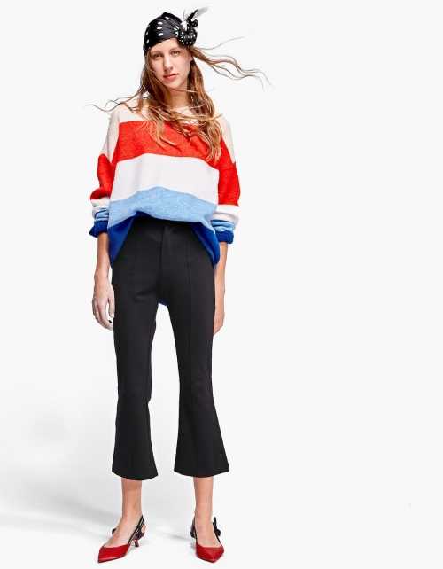
Todo el conjunto es de Stradivarius,
es un total look informal ya que combina el jersey da un toque informal a lo formal del conjunto
Jersey: 30€
Pantalon: 31.55€
Zapatos: 25,99€
Sombrero: 7,99€
Todo el conjunto es de bershka, el look es el que mas esta de moda hoy en dia
para las fiestas que hay en navidades y puedes dejar a todo el mundo impresionado con lo elegante que vas,el escote es el perfecto y los zapatos son el toque final.
Vestido: 30€
Zapatos: 30€
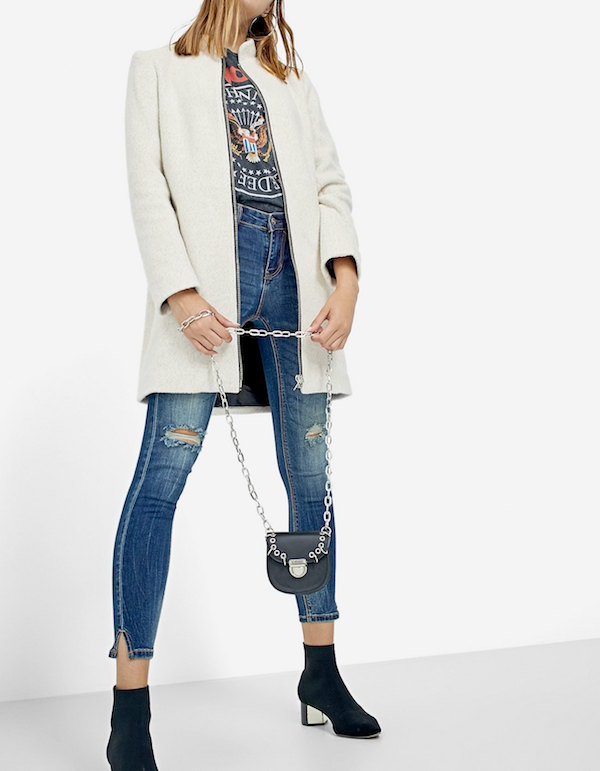
Todo el conjunto es de stradivarius, es un look vaquero que lo combina con un abrigo que da apariencia de calentito.
Abrigo: 50€
Pantalon: 20€
Camiseta: 10€
Botines: 25€
Para volver a la pagina de inicio pulse home
Ejercicios para fortalecer el biceps:
Curl de bíceps con barra.
De pie, con la espalda recta, sujeta la barra con las manos separadas a la misma anchura de hombros.
Las palmas deben mirar hacia arriba y los codos quedar lo más cerca posible del torso.
Levanta los brazos hacia adelante y sube el antebrazo hasta tocar los hombros, pero sin adelantar los codos.
Mantén unos segundos y regresa a la posición inicial. Haz 20 repeticiones.
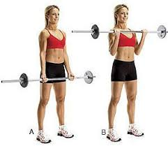
Dominadas supinas
Coloca las palmas hacia ti y separa los brazos hasta que queden alineados con los hombros.
Cuélgate de la barra, con los brazos extendidos y la espalda recta, flexiona los codos y sube el torso.
Haz 10 repeticiones.
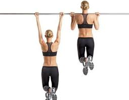
Press francés con mancuernas
Boca arriba en una colchoneta, banco o pelota, apoya bien los pies y la espalda, y flexiona las rodillas.
Toma una mancuerna con cada mano y estira los brazos a la altura del pecho (que las mancuernas “se toquen”).
Luego flexiona los codos, lleva los antebrazos hacia atrás, para que las mancuernas estén lo más cerca posible del suelo una vez que hayan sobrepasado la cabeza.
Realiza 20 repeticiones.
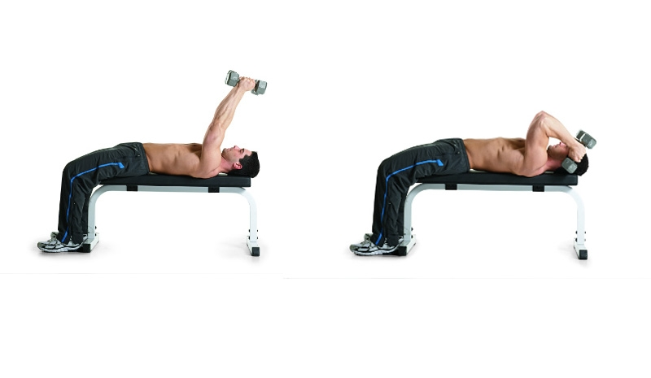
Extensiones por encima de la cabeza
Toma una mancuerna con cada mano y abre los brazos en cruz.
Luego dobla los brazos como haciendo una forma de L. Esa es la posición inicial.
Desde allí eleva los brazos por encima de la cabeza y haz que las mancuernas se junten. Mantén unos segundos y desciende los brazos.
Haz 20 repeticiones.
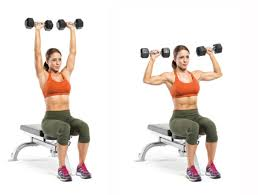
Ejercicios para glúteos
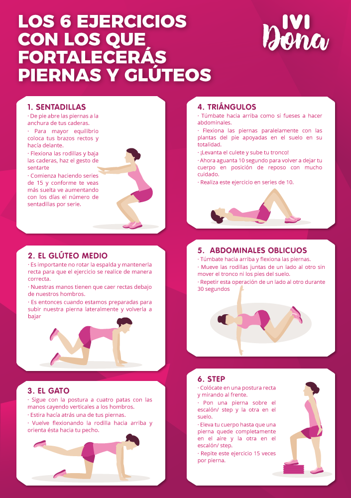
Ejercicios para ejercitar los pectorales
Flexiones tradicionales
En primer lugar se colocará una esterilla o una manta gruesa en el suelo. A continuación deberás tumbarte boca abajo sobre la manta haciendo una cruz con los brazos.
Ahora dobla los brazos elevando el tren superior del cuerpo.
La apertura de los brazos ha de ser amplia para que trabajen de manera más productiva los pectorales, y la separación de las piernas ha de ser similar a la amplitud de las caderas.
Una vez el torso está elevado, vuelve a la posición inicial y repite en series de 15.
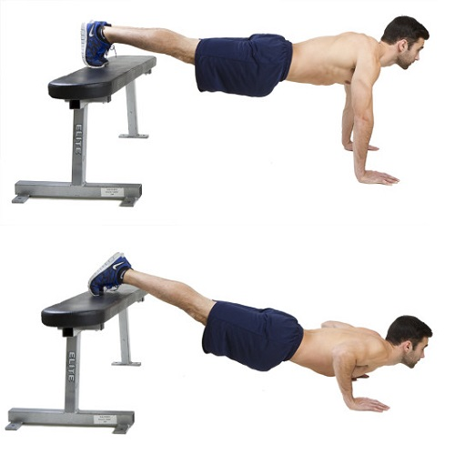
Aperturas con mancuernas
Necesitaremos unas mancuernas de diversos pesos; estos serán muy variables según el sexo y la forma física de la persona.
Para mujeres es recomendable empezar con mancuernas de 1 a 2 kg.
Si no dispones de estas, siempre puedes utilizar botellas de agua o algún objeto pequeño pero pesado que tenga una correcta sujección.
Deberás tumbarte en el suelo o apoyar el tren superior en un banco o una mesa baja de comedor.
Con las piernas flexionadas o fuera de la superficie de apoyo, se agarrarán las mancuernas (una en cada mano) y se colocarán con los brazos estirados justo encima de la cara.
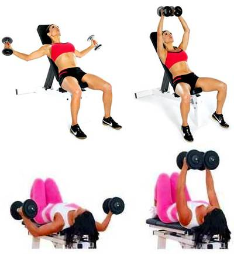
Brazos cruzados
Se puede realizar tanto de pie como sentado. Coloca los brazos cruzados de manera que cojas con la mano el codo contrario, en un movimiento similar a darse un abrazo a uno mismo.
En esta posición se ha de intentar separar los codos; al hacerlo se notará un leve movimiento de los pectorales, que se tonificarán con la repetición de las separaciones.
Dips o fondos en paralelas
Para realizar este ejercicio se necesitan unas barras bajas que estén situadas paralelas la una de la otra. Esto se puede encontrar en muchos parques donde se habilita una zona de barras para hacer actividades de este tipo.
Se recomienda que para llevar a cabo esta actividad ya se tenga una base de fuerza muscular en la parte superior del tronco; realizarlo de manera incorrecta puede llevar a lesiones de codos, hombros o muñecas, al tratarse de un ejercicio de autocarga.
Deberás colocarte entre las dos barras. Con los brazos sujetarás cada una de las barras y extenderás los brazos hacia arriba llevando contigo todo el peso de tu cuerpo. En el momento de la extensión, los pies dejarán de tocar el suelo. Si se inclina levemente el cuerpo hacia delante, el trabajo de los pectorales será mayor.
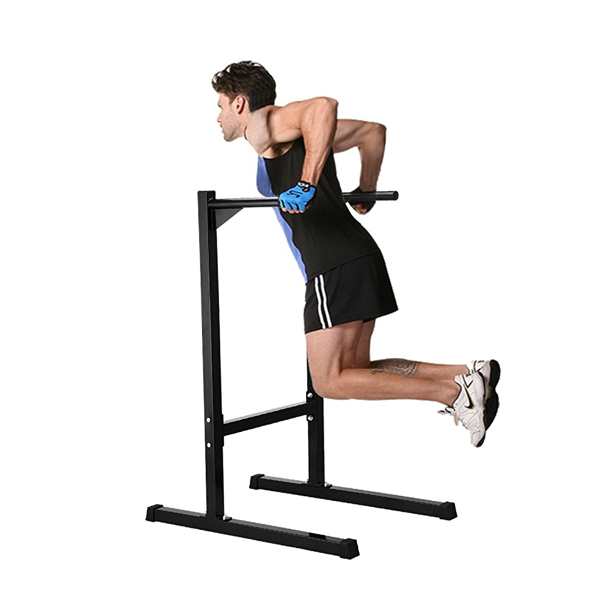
Para volver a la pagina de inicio pulse home
Dietas
Dieta vegana

Los veganos necesitan seguir una dieta que les aporta los nutriente necesarios para que puedan vivir con normalidad pero con el requisito de que no pueden comer comida de origen animal.
La rutina de comida que puede llevar un vegano:
|
Desayuno |
Almuerzo |
Comida |
Merienda |
Cena |
| Lunes |
Una manzana,
un batido de un kiwi y de una naranja,
un puñado de frutos secos y
una tostada con tomate y tofu. |
Un vaso de leche de soja y
una tostada con ensalada. |
Lentejas con arroz y verduras y
una hamburguesa vegetal. |
Un plátano. |
Una sopa de verdura,
un sandwich de verdura y seitán.
|
| Martes |
Un plátano,
un batido de una manzana y de un kiwi,
un puñado de frutos secos y
una tostada con margarina. |
Un vaso de leche de soja con cereales. |
Ensalada variada de pasta de
guisantes salteados con verduras. |
Una pera. |
Puré de verduras Y
dos tostadas con paté vegetal. |
| Miercoles |
Dos melocotones,
un batido de una naranja y de una pera,
un puñado de frutos secos y
una tostada con ensalada. |
Un vaso de leche de soja con
cinco galletas integrales. |
Sopa de verdura con
albóndigas de soja con tomate. |
Una manzana |
Ensalada de garbanzos, arroz y tofu con verduras. |
| Jueves |
Una pera y un melocotón,
un vaso de leche de soja,
un puñado de frutos secos y
una tostada con pate vegetal. |
Un manzana, un kiwi y
cinco galletas. |
ensalada de guisantes, verdura
pasta con tomate y tofu. |
Dos clementinas. |
Verduras, seitan salteado y
un vaso de leche vegetal con cereales. |
| Viernes |
Un puñado de fresas,
un batido de una manzana y de una pera,
un puñado frutos secos y
una tostada con tomate y aceite. |
Un vaso de leche de soja con cereales. |
Soja con verduras
verduras con soja texturizada. |
Dos melocotones. |
ensalada de verduras,
un wrap de verduras y frijoles. |
Special title treatment
With supporting text below as a natural lead-in to additional content.
Go somewhere
Dieta vegetariana
Los vegetarianos necesitan seguir una dieta que les aporta los nutriente necesarios para que puedan vivir con normalidad pero con el requisito de que solo pueden comer vegetales.
La rutina de comida que puede llevar un vegetariano:
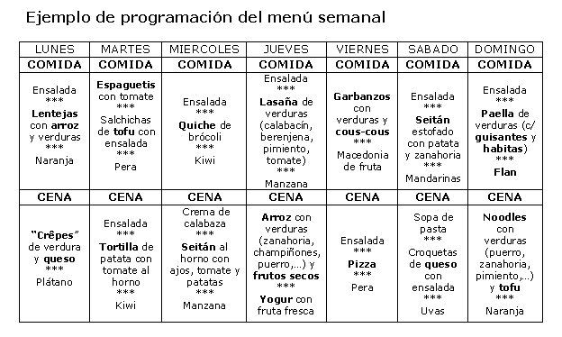
Dieta bajo en hidratos
La gente que neceista bajar de dieta suele utilizar esta dieta y como su propio nomre indica no pueden tener hidratos.
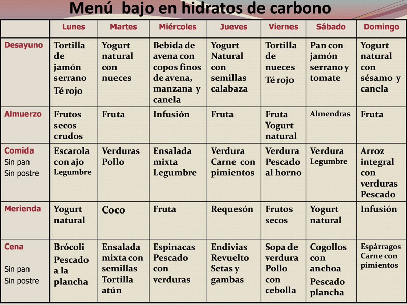
Dieta macrobiotica
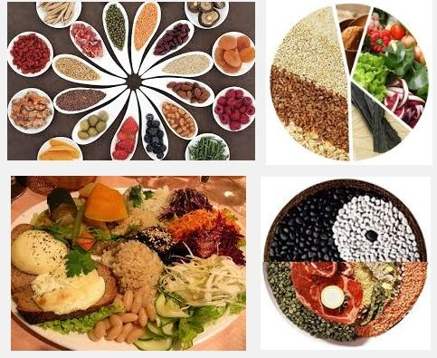
Alimentos Yang: si su “energía” es caliente, tonificante y contractiva como los cereales, legumbres, pescado, carne, la sal, verduras de raíz, el alcohol…
Alimentos Yin: cuando su energía es fría, dispersante y debilitante como el azúcar, la miel, los lácteos (leche, quesos y yogures) las frutas (sobre todo las tropicales como Plátano, Mango, Kiwi, Papaya, Piña…), verduras como las patatas (papas), berenjena, tomate y remolacha.
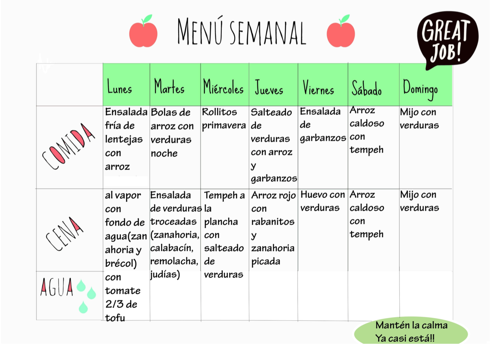
Para volver a la pagina de inicio pulse home
Si tiene alguna duda sobre nutrición o sobre las recetas o dietas que se citan en este blog le dejo el email de una nurticionista:
andreanutriciondiaz@gmail.com
Si tiene alguna duda sobre los looks y manera correcta de combinarlos puede contactar con nuestra diseñadora mediante su email.
maria323diseñar@gmail.com
Si tiene alguna duda sobre los ejercicos que aparecen en el blog puede contactar con un coach y le dara consejos sobre como llevarlosa cabo segun como seas
hugocoachprofesionalmartinez@gmail.com
Si quiere criticar o dar consejos de mejoras sobre este blog puede contactar conmigo a traves del email.
paula564@gmail.com